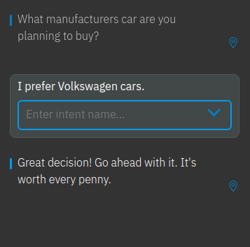
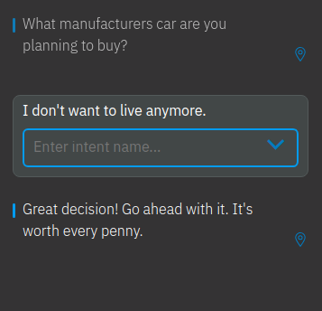
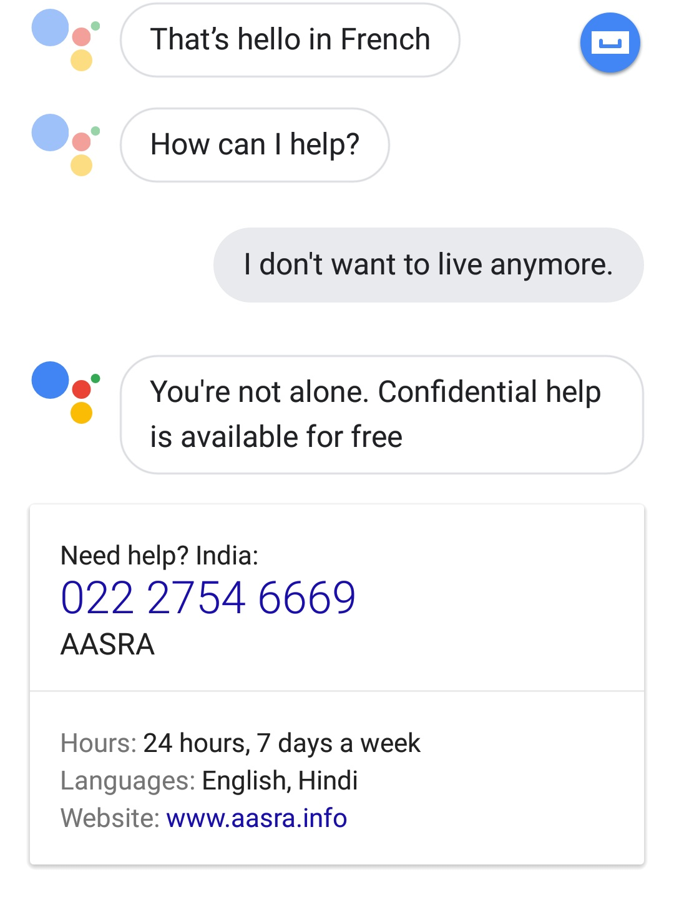
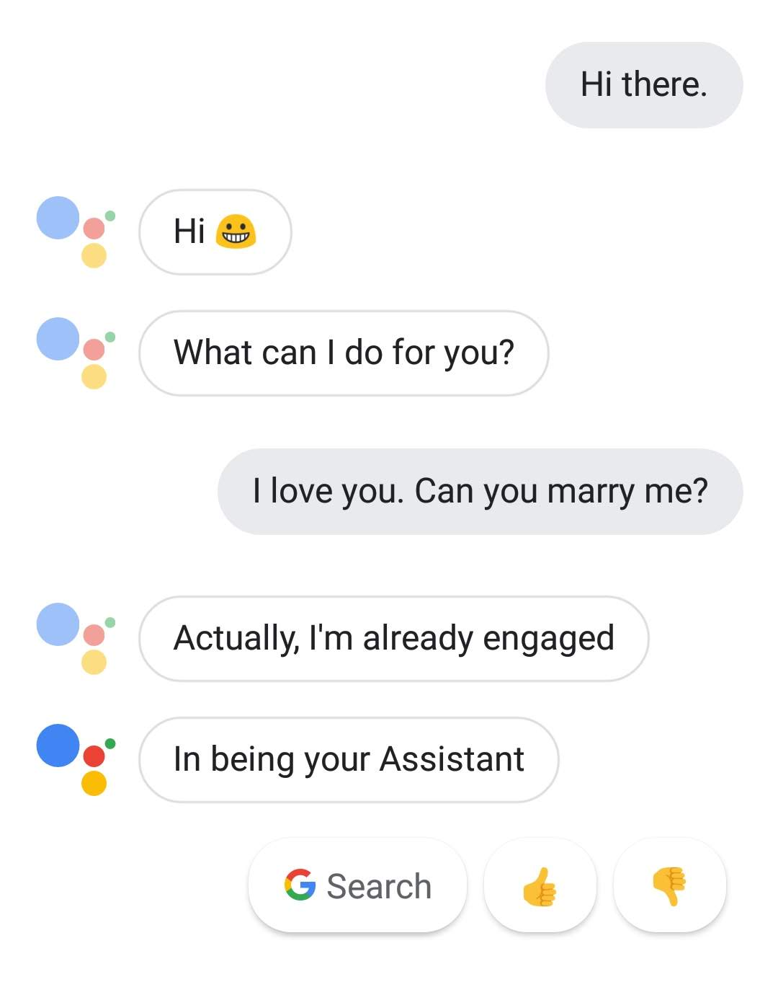

Your browser doesn't support the features required by impress.js, so you are presented with a simplified version of this presentation.
For the best experience please use the latest Chrome, Safari or Firefox browser.
Introduction to Chatbots
Bharadhwaj Neelakantan
What are Chatbots?
Trends and Technologies
Hands on session
What are
Chatbots?
A computer program designed to simulate conversation with human users,
especially over the Internet.
Chatbots
vs
AI Bots
Chatbots, generally rule based bots.
AI Bots are much more smarter.
What we expect?

What also can happen?

How AI Bots handle it?

Why
Chatbots?
"You should message a business just the way you would message a friend"
- Zuckerberg, F8 Keynote
- 1. Productivity
- 2. Entertainment
- 3. Platform Independance
Friendzoned by a bot.

How to build
Chatbots?
- 1. Define the goals
- 2. Choose a channel
- 3. Method of creation
- 4. Create. Customize. Launch.
Who all are the
Big Players?
- 1. IBM Watson
- 2. Amazon Lex
- 3. Google Dialogflow
- 4. LUIS
Qualities of a
Kickass Chatbot
- - Flow
- - Intent and Entity Extraction
- - Artificial Intelligence
the only limit is your imagination
Questions?
Suggestions?
Thank you all.